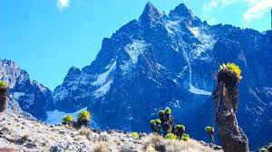
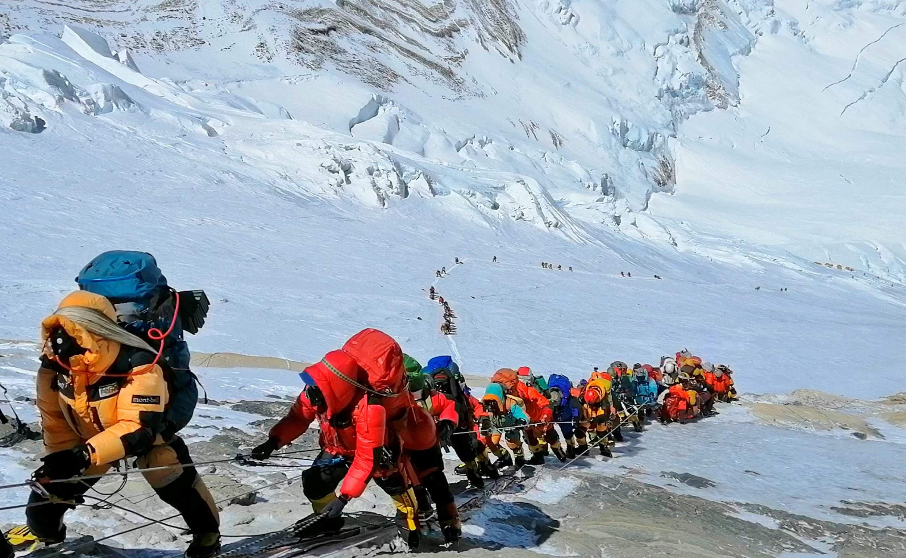
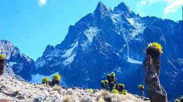
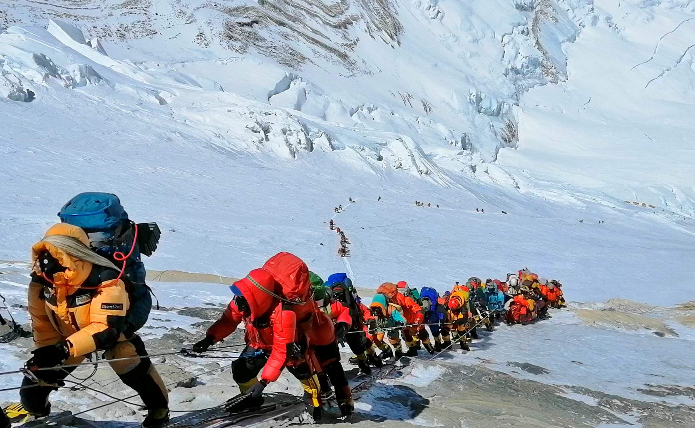

Mountain climbing activity mainly takes place during July to September.This is due to the reason that Mt.Kenya experiences high temperatures during this eve and thus fits for human condition. Also there are less wild animals roaming the area. It has been fun climbing with my team members!
For more info: visit www.@horsefunriding.ac.ke